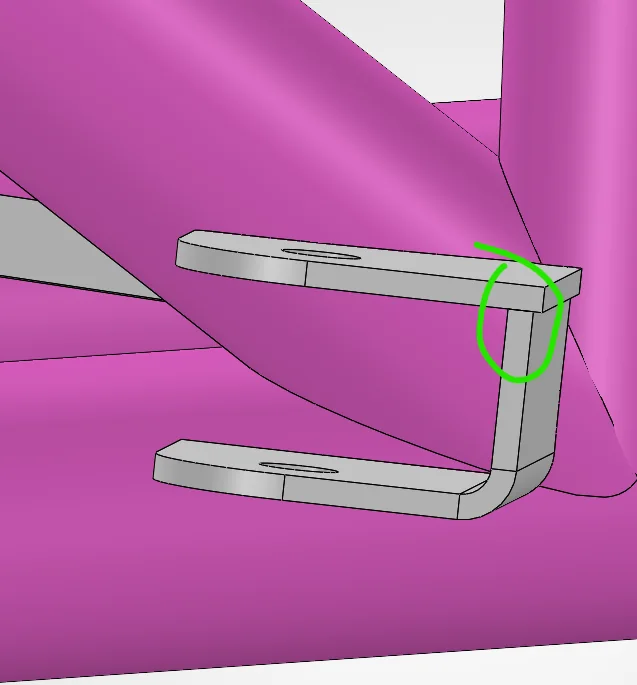
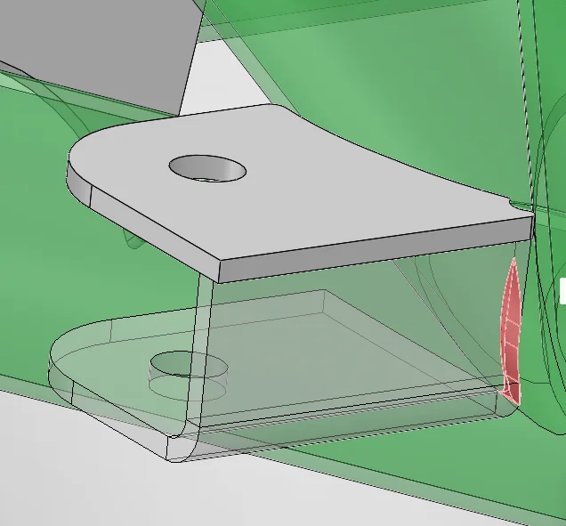
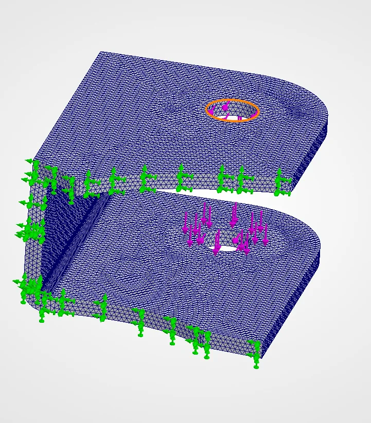
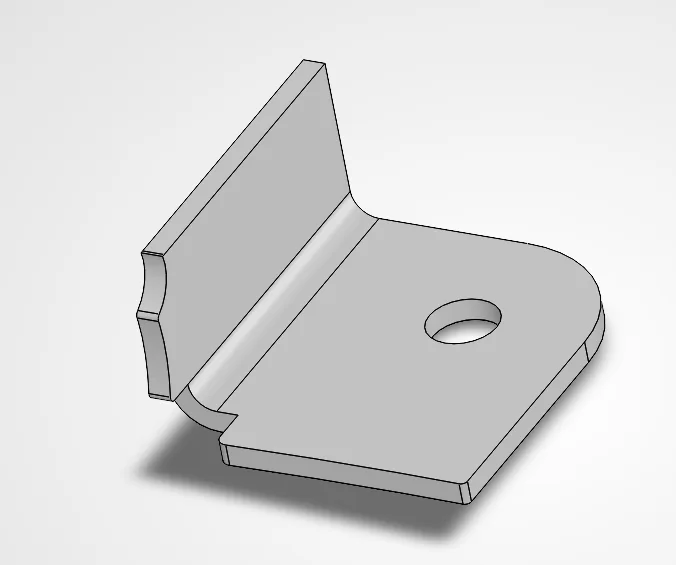

Control Arm Mounting Tabs
the welded tabs that carry every suspension load from the control arms into the frame
- project
- 04 of 08
- team
- Penn Electric Racing, suspension
- credit
- Designed, fit checked and analyzed by me in CAD for the suspension subteam.
01the problem
- each control arm ends in a rod end that bolts to a pair of tabs welded on the frame
- cornering, braking and bump loads all pass through these tabs into the chassis
- they have to hold the pickup point exactly where the suspension geometry puts it
- and they have to fit around round frame tubes meeting at awkward angles
02first design and fit check
- first version was a C shaped double shear tab, one plate bent around so the bolt is supported on both sides
- checking it in the frame assembly showed the top corner running into a chassis tube
- an interference check marked the overlap in red, so the part could not be built as drawn


03finite element analysis
- meshed the tab in fine tetrahedral elements
- fixed every edge that gets welded to the frame
- applied the control arm load as a bearing load on the bolt holes
- the goal is to find where the tab sees its peak stress before any metal is cut

04revised tab
- reworked as a bent tab with a coped edge that wraps the tube
- the cope sits flush on the tube, which clears the interference and leaves a clean joint to weld

05results
- interference removed, so the tab fits the frame as modeled
- FEA boundary conditions set to match how the tab is actually welded and loaded
- a coped joint that sits flush on the tube and is ready to weld